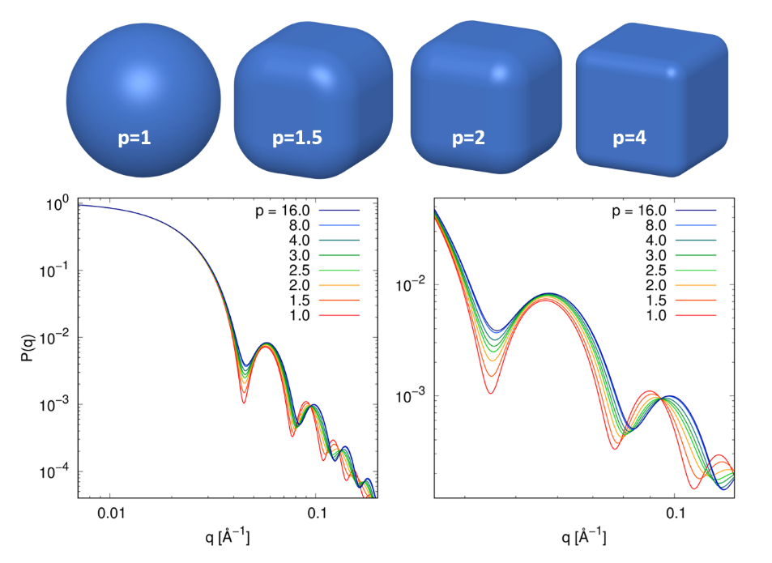

Abstract
Accurate characterization of the nanocrystal shape with high statistical relevance is essential for exploiting the strongly shape-dependent properties of cuboidal nanoparticles towards applications. This work presents the development of a new small-angle scattering form factor based on the superball geometry. The superball quantifies the characteristic rounding of corners and edges of cuboidal nanoparticles with a single parameter. Applied to small-angle scattering data of sufficiently monodisperse nanoparticles, the superball form factor enables differentiation between the effects of extended particle size distribution and irregular particle shape. The quantitative application of the superball form factor is validated against microscopy data for a series of monodisperse nanoparticles and implemented into the user-friendly, open source software Sasview.Online-Demo
Superball Parameters
Implementation
The Superball is available in the software package SasView as formfactor.
Get SasView at https://www.sasview.org.
Sources
aThis webpage was created using
Angular 12.0,
using
d3.js for plotting.
bThe online demo is implemented as Rust module, which was compiled to WASM to enable fast client-sided calculations in the browser.